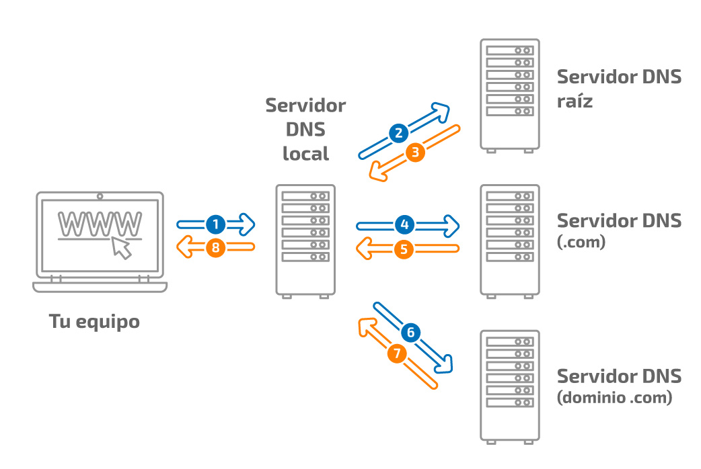
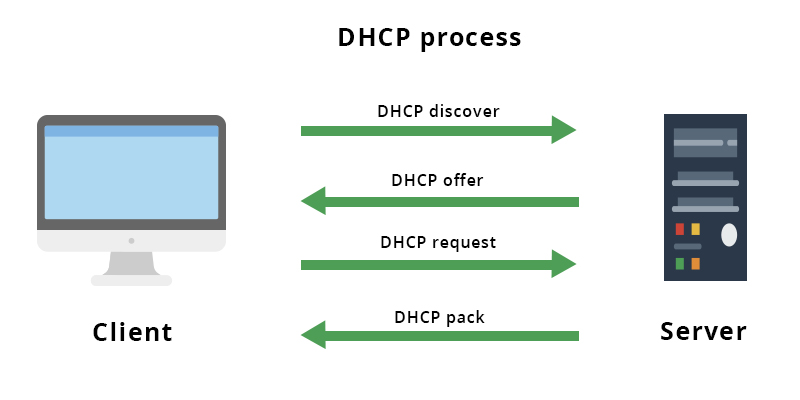

1. Servidor DNS
¿Qué es y para qué sirve?
El servidor DNS (Domain Name System) es un sistema esencial de Internet que funciona como una especie de directorio telefónico. Su función principal es traducir los nombres de dominio que las personas usamos (como www.google.com o www.youtube.com) en direcciones IP, que son números únicos que identifican a cada dispositivo conectado a la red. De esta forma, los usuarios no necesitan memorizar largas cadenas numéricas, sino que pueden acceder fácilmente a los sitios web escribiendo un nombre sencillo.
Los DNS permiten que la navegación por Internet sea práctica, rápida y segura. Sin este sistema, tendríamos que ingresar manualmente la dirección IP de cada sitio web al que quisiéramos entrar.
Ejemplo:
Cuando escribimos www.google.com en el navegador, el servidor DNS lo traduce a una dirección IP como 142.250.64.78. Así, el navegador sabe exactamente a qué servidor debe conectarse para mostrarnos la página.

2. Servidor Web
¿Qué es y qué función cumple?
Un servidor web es un programa o equipo especializado que almacena páginas web y las entrega a los usuarios cuando son solicitadas a través de un navegador (como Chrome, Firefox o Edge). Cada vez que visitamos una página, el navegador envía una petición al servidor web, y este responde enviando el contenido solicitado: textos, imágenes, videos, audios o archivos.
El servidor web es esencial para la existencia de Internet tal como lo conocemos, ya que permite que la información esté disponible en cualquier momento y lugar del mundo. Además, maneja protocolos como HTTP y HTTPS para garantizar la comunicación entre cliente y servidor.
Ejemplo:
Cuando accedemos a sitios como YouTube, Wikipedia o Facebook, lo que hacemos realmente es conectarnos al servidor web de esas plataformas, el cual nos envía el contenido que vemos en nuestras pantallas.
3. Servidor FTP
¿Para qué se usa?
El servidor FTP (File Transfer Protocol) es un tipo de servidor que se utiliza para transferir archivos de un lugar a otro a través de Internet. Su función principal es permitir que los usuarios puedan subir (enviar) o descargar (recibir) archivos de forma remota.
Es muy común en el desarrollo de páginas web, ya que los diseñadores y programadores lo utilizan para subir sus proyectos desde la computadora local hasta el servidor donde se publicará el sitio. También es útil en empresas que comparten documentos pesados con sus empleados o clientes.
Ejemplo:
Un administrador de páginas web utiliza un servidor FTP para subir imágenes, documentos y el código de su página a Internet, de manera que esté disponible para los visitantes.

4. Servidor DHCP
¿Qué hace con las direcciones IP?
El servidor DHCP (Dynamic Host Configuration Protocol) es el encargado de asignar de manera automática direcciones IP a los dispositivos que se conectan a una red. Gracias a él, no es necesario que el usuario configure manualmente una dirección IP en cada computadora, celular o tablet.
Esto hace que la gestión de redes sea más sencilla y rápida, ya que evita conflictos de direcciones IP duplicadas y asegura que cada dispositivo tenga una identidad única en la red.
Ejemplo:
Cuando conectas tu celular o laptop al WiFi de tu casa, el router (que actúa como servidor DHCP) te asigna automáticamente una dirección IP como 192.168.1.10, sin que tengas que hacer nada.

5. Servidor de Correos
¿Qué es?
Un servidor de correos es un sistema encargado de gestionar el envío, recepción y almacenamiento de correos electrónicos. Funciona como una oficina postal digital, que recibe los mensajes de los usuarios y los entrega al destinatario correcto en cuestión de segundos.
Existen diferentes tipos de protocolos que permiten que los correos funcionen correctamente:
- SMTP (Simple Mail Transfer Protocol): Se utiliza para enviar correos electrónicos desde el cliente (como Gmail o Outlook) hasta el servidor de destino.
- IMAP (Internet Message Access Protocol): Permite recibir correos y mantenerlos sincronizados en varios dispositivos al mismo tiempo. Es muy útil cuando accedemos al correo desde el celular, la computadora y la tablet.
- POP3 (Post Office Protocol): También se utiliza para recibir correos, pero a diferencia de IMAP, descarga los mensajes al dispositivo y los elimina del servidor, por lo que no permite la sincronización entre varios equipos.
Ejemplo:
Cuando envías un correo en Gmail, el servidor SMTP lo entrega al servidor de destino, y el receptor puede descargarlo mediante POP3 o leerlo desde varios dispositivos mediante IMAP.